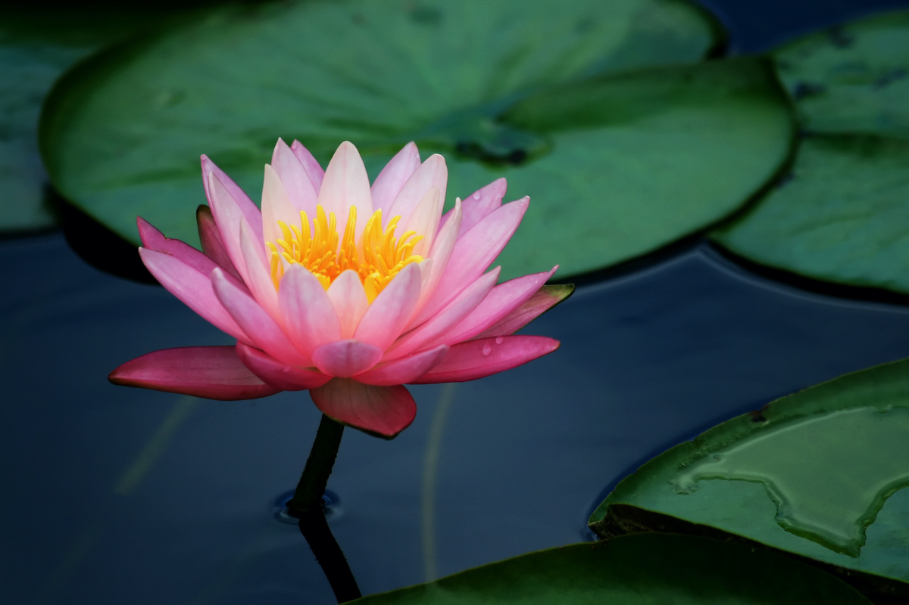

My content example 1
My content example 2
 Lets talk about our national flower waterlilly. The flower waterlilly is very beautiful and grows up in lake or water area.The color of the waterlilly is pink and white is color. For this flower we don't have to farm it grows up by itself in clean water area. That's all about our national flower waterlilly.
Now we will talk about our famous tourist place situated in Chattogram. It's name is Saint Martin Island. Many people from different countries come to visit Saint Martin Island. It's after cox's bazar